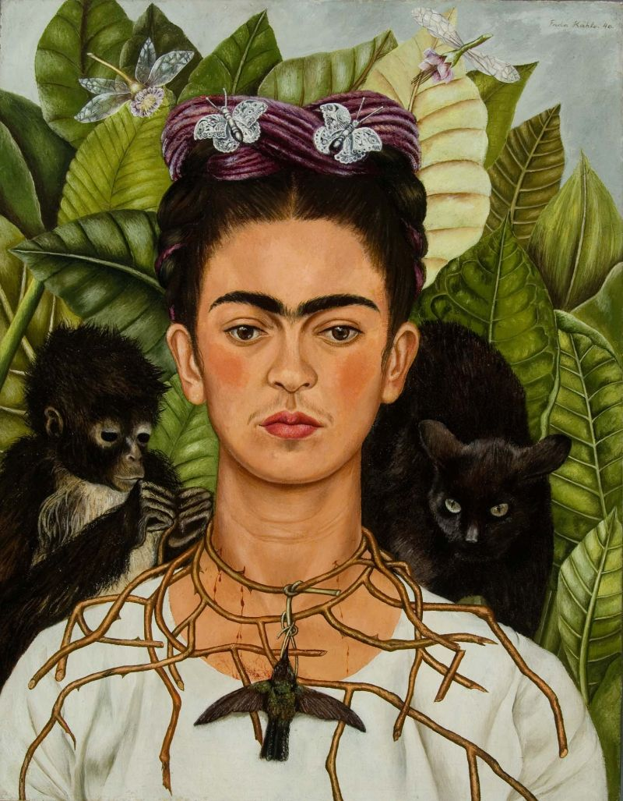

Here’s our list of the most famous artists of all time.
Van Gogh
Van Gogh is known for being psychologically unstable, but his arts are among the most popular and most famous artists of all time. Van Gogh’s technique of painting with flurries of thick brushstrokes made up of vivid colours squeezed straight from the tube would inspire subsequent generations of artists.
Michelangelo
Michelangelo was a triple threat: A painter (the Sistine Ceiling), a sculptor (the David and Pietà) and architect (St. Peter’s Basilica in Rome). Make that a quadruple warning since he also wrote poetry. Aside from the aforementioned Sistine Ceiling, St. Peter’s Basilica and Pietà, there was his tomb for Pope Julian II and the design for the Laurentian Library at San Lorenzo’s Church.
Frida Kahlo
The Mexican artist and feminist icon was a performance artist of paint, using the medium to lay bare her vulnerabilities while also constructing a persona of herself as an embodiment of Mexico’s cultural heritage. Her most famous works are the many surrealistic self-portraits in which she maintains a regal bearing even as she casts herself as a martyr to personal and physical suffering—anguishes rooted in a life of misfortunes that included contracting polio as a child, suffering a catastrophic injury as a teenager, and enduring a tumultuous marriage to fellow artist Diego Rivera.
Pablo Picasso

Pablo Picasso is implicitly synonymous with modern art, and it doesn’t hurt that he fits the generally held image of the fugitive genius whose goals are balanced by a taste for living big. He turned the field of art history with radical innovations that include college and Cubism, which destroyed the stranglehold of representational material matter on art, and set the rate for other 20th-century artists.